Resultados de encuesta sobre el servicio de buffet.
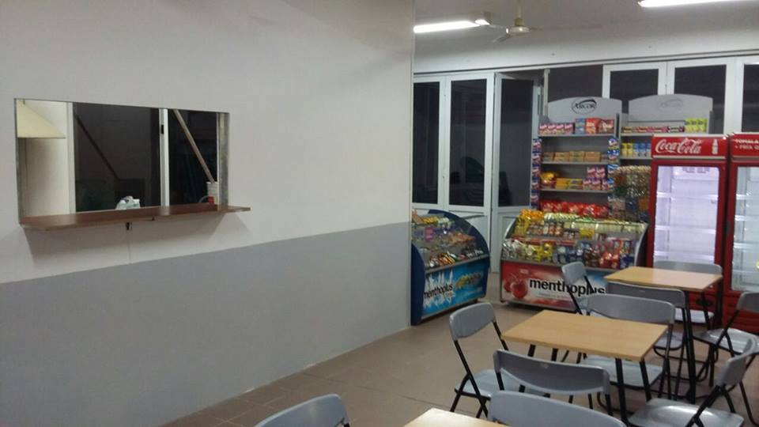Semanas atrás, la Secretaría de Bienestar estudiantil del Centro de estudiantes realizo una encuesta online, la cual tenía como fin medir la opinión general de los alumnos de nuestra facultad con respecto al actual servicio de buffet.
Luego de obtener las respuestas, y realizar el trabajo de análisis sobre los datos obtenidos, se lograron las conclusiones que se detallan a continuación.
Artículos de kiosco
En cuanto a la variedad de artículos de kiosco (alfajores, galletitas, bizcochos, golosinas) el 88,5 % respondió que es adecuada (192 personas). Respecto a los precios de los mismos, en relación con locales de la zona, el 54,8% respondió que son más costosos en el buffet, el 41% opina que los precios son similares, y solo el 2,8 % considera que son más baratos.
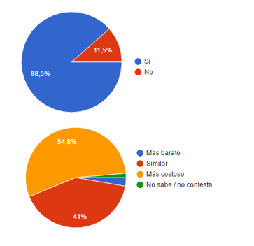Comidas elaboradas
Con respecto a las comidas elaboradas (empanadas, pizzas, tartas) el 52,5% respondió que considera adecuada la variedad. Sus precios con respecto a locales de la zona, el 56,7% respondió que son más costosos, el 27,6 % opina que son similares y un 5,1% más barato.
Al preguntar por el tamaño de las porciones los estudiantes respondieron que consideraban que eran pequeñas (un 52,1%), normales (38,7 %), más grande 1,8% y 7,4 % no sabe o no contesta.
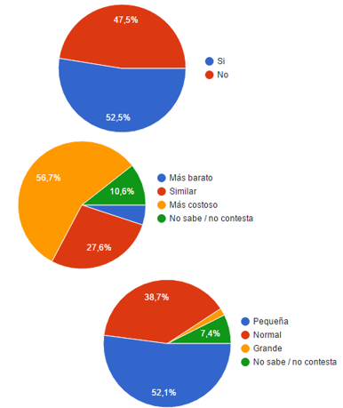Lácteos
El 29 % de los estudiantes dice que ha encontrado lácteos en el buffet, el 21,2 % no encontró y 49,8 % no sabe/no contesta.
Los precios de los lácteos en relación con los locales de la zona, el 14,7 % de los encuestados opinaron que son más costoso, el 12 % opinaron que los precios son similares y el 0,9 % afirma que el buffet es más barato.
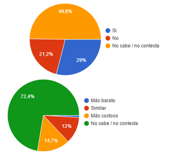Frutas
El 2,3 % de los encuestados ha encontrado frutas, el 72,8 % dijo que no ha encontrado y el 24,9 % no sabe/no contesta.
Con respecto al precio el 93,5 % no sabe/no contesta, el 3,2% opina que los precios son similares, el 2,8 % más costoso, y más barato sólo el 0,5 %
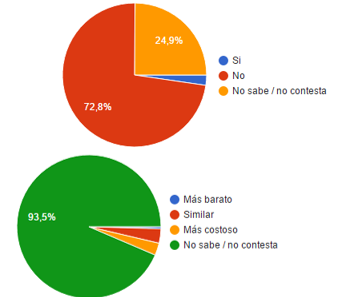Comida apta para celíacos
Solo un 14,3 % de los encuestados ha encontrado. El 65,9 % no sabe. Y el 19,8 % restante no ha encontrado.
El 86,2% no sabe no contesta acerca de los precios. El 8,3% opina que es más costoso y el 3,2 % opina que son similares. Solo el 2,3% ha encontrado precios más baratos.
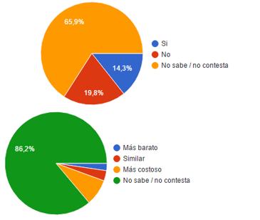Comida apta para vegetarianos
Un 25,3 % ha encontrado comidas para vegetarianos.
Un 24,4 % expresa que no ha encontrado. El 50,2 % no sabe no contesta.
A su vez, de los precios han respondido que son más costosos en nuestro buffet (6,9 %), similares (11,5 %), el 1,4 % opina que es más barato y por ultimo un 80,2 % no sabe no contesta.
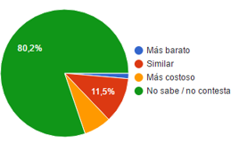Horarios de atención
En cuanto a los horarios matutinos, el 43,8 % de quienes hicieron las encuestas opinan que los horarios no se han cumplido. El 29 % no sabe. El 27,2% restante expresan que los horarios se han cumplido.
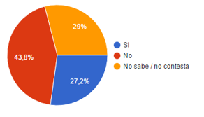Con respecto al horario de tarde/noche, el 65,9 % de quienes hicieron las encuestas opinan que los horarios se han cumplido. El 15,7 % no sabe. El 18,4 % restante expresan que los horarios no se han cumplido.
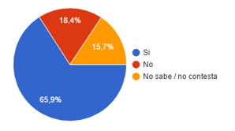Sobre los días sábado por la mañana, el 89,6 % no sabe o no ha querido contestar. El 5,2 % opina que se han cumplido y otro 5,2 % opina que no se han cumplido.
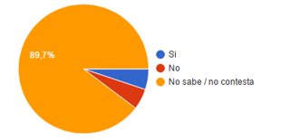Libro de quejas
Con respecto al libro de quejas, el 22,1 % lo encontró a disposición, 44,2 % no lo ha encontrado y 33,6% no sabe no contesta
Cabe destacar en este punto, que el libro de quejas se encuentra a disposición de cualquier cliente, mediante la solicitud del mismo. Desde el CEICU insistimos en la utilización del mismo, ya que este es uno de los medios más fuertes para hacer valer la opinión de los usuarios.
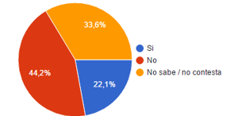insistimos en la utilización del libro de quejas, ya que este es uno de los medios más fuertes para hacer valer la opinión de los usuarios.
Atención al público
El 18 % opina que es muy buena, el 57,6 % respondió que es buena, el 20,3 % dice que es regular, y solo un 3,2 % dice que la atención es mala.
En relación con años anteriores el 10,1 % dijo que utiliza los servicios del buffet con más frecuencia. En cambio el 34,6% los utiliza como siempre, con la misma frecuencia. Y el 55,3% los utiliza con menos frecuencia.
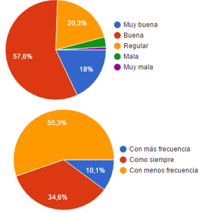Calificación del buffet
En una escala del 1 al 10 las calificaciones obtenidas fueron las siguientes
- 10 = 1,8 %
- 9 = 4,6 %
- 8 = 15,7 %
- 7 = 24 % (52 personas)
- 6 = 22,6 % (49 personas)
- 5 = 14,7 %
- 4 = 10,6 %
- 3 = 2,3 %
- 2 = 1, 4 %
- 1 = 2,3 %
Relevamiento de precios
En cuanto al relevamiento de precios realizado por el centro de estudiantes de la Facultad, el 28,4 % de los encuestados está al tanto de que se realizó. Por otra parte, el 61,4 % no lo sabe. El 10,2% restante no sabe no contesta.
Dicho relevamiento fue descartado por la Secretaría de Planeamiento de nuestra facultad, durante una reunión con integrantes del Centro de Estudiantes. Por consiguiente, el CEICU se encuentra trabajando para llevar a cabo un nuevo relevamiento de precios en la Zona aledañas a la UTN, con el fin de obtener resultados más recientes y aplicar una regulación a los precios actuales del buffet.
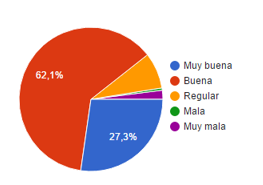Acutalmente el CEICU trabaja en un nuevo relevamiento